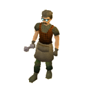
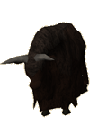
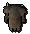
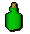
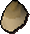

")
Crafting - Extra Features
The Crafting Guild | Training Hints and Tips | Summoning Familiars | Quests | Rabbit-foot necklace
Fritz, the Entrana Glassblower | Dorgeshuun lightorbs | Of Yaks and Arctic Pine | Obsidian Pillars
Cape Dyeing | Silver Bolts | Snail Helmets | Limestone | Craftsman's Monocle | Dungeoneering
Fritz, the Entrana Glassblower | Dorgeshuun lightorbs | Of Yaks and Arctic Pine | Obsidian Pillars
Cape Dyeing | Silver Bolts | Snail Helmets | Limestone | Craftsman's Monocle | Dungeoneering
The Crafting Guild

Inside the Guild you will find a number of things to help with your Crafting, including a pottery oven, pottery wheels, spinning wheels, a sink, gold, silver and clay rocks, a tanner and a number of other useful items.
A necklace of skills will teleport you directly to the guild.
Training Hints and Tips
- Leather is a quick and cheap method to raise your Crafting level.
- Crafting bowstrings (members only) is not only cost effective but will give you the opportunity to make a profit selling to fletchers.
- Visit Entrana when making glass objects as everything you will need is there apart from a bucket!
- Miners may wish to use the rocks in Shilo Village to gain both Mining and Crafting experience (don't forget to take a chisel!).
Summoning Familiars
Using the Summoning skill, you'll find that there are a few familiars that might be useful for training your Crafting. Of particular note are the beasts of burden, who can carry items for you. In addition to whatever else they can do for you, these familiars will increase the amount of time you can train before having to head to a bank.
Quests Providing Crafting Experience
For quests that specifically give Crafting experience as a reward, please refer to the Crafting Rewards page.
Rabbit-foot necklace (Members Only)
 These items will increase your chance of receiving a bird's nest when Woodcutting. To make one, you will first need a rabbit foot, obtained by successfully catching a rabbit (see the Hunter - Rabbit Snaring page for information on how to do this). This can then be strung with a ball of wool at level 37 Crafting to make the rabbit-foot necklace.
These items will increase your chance of receiving a bird's nest when Woodcutting. To make one, you will first need a rabbit foot, obtained by successfully catching a rabbit (see the Hunter - Rabbit Snaring page for information on how to do this). This can then be strung with a ball of wool at level 37 Crafting to make the rabbit-foot necklace.
Fritz, the Entrana Glassblower

The island of Entrana is a peaceful place well suited to the determined glassblowing enthusiast. While it may seem obvious to those in the know, Entrana's position in the seas results in fairly large quantities of seaweed washing up on the north-west shore, there is a sandpit in the township and Fritz is more than willing to offer visitors his spare glassblowing pipe (located in his house to the west of the furnace). On top of this, because Fritz is a busy man, he will offer to buy your molten glass from you for the princely sum of 20 coins.
Dorgeshuun lightorbs
![[image]](../../img/main/kbase/skills/crafting/screenshots/dorgeshuun_light_on.gif) Dorgesh-Kaan, the hidden city of the cave goblins, is lit by hundreds of magical lamps, but every so often these lamps need to be repaired. To repair the orb, start by making a dorgeshuun lightorb, then add some filament (which you can get from the wire machine in the south-west of the city - you will need a Thieving level of 44 to snatch the wire from its rapidly spinning wheel).
Dorgesh-Kaan, the hidden city of the cave goblins, is lit by hundreds of magical lamps, but every so often these lamps need to be repaired. To repair the orb, start by making a dorgeshuun lightorb, then add some filament (which you can get from the wire machine in the south-west of the city - you will need a Thieving level of 44 to snatch the wire from its rapidly spinning wheel).Once you have a complete lightorb, look around for a broken lamp in one of the goblins' houses and use the complete orb to repair it. You'll receive 1000 Firemaking experience for your trouble (although you will need 52 Firemaking to repair the lamp). If you are particularly zealous in your repairs and manage to fix 100 lamps, you will receive an extra reward of a further 5000 Firemaking experience!
It is worth noting that Dorgeshuun lightorbs are tradeable, so even if you cannot make them, you may still be able to fit them to a broken lamp.
Of Yaks and Arctic Pine

The yak may be an unpleasant animal with a marginally less pleasant smell, but the cunning fremennik of Neitiznot have developed their society to embrace the yak (however unpleasant it may be), and those who have helped resolve the problems of The Fremennik Isles will learn many of the belligerent yak's fabulous uses.When slain, yaks will drop skins and hair, both of which are useful: skins can be cured by Thakkrad Sigmundson (in the Burgher's hall) for 5 coins; hair can be spun into rope.

To make anything from arctic pine, you must take it to one of the stumps in Neitiznot, marked with this symbol . Note that you will need a hammer to use the stumps.
Yak-hide Armour
Yak-hide armour is simple enough to craft from cured yak-hides, requiring only a needle and some thread. One piece of yak-hide is sufficient for the legs, while two pieces are needed for the body. Crafting either piece of armour will net you 32 Crafting experience.
| Item | Levels Required |
||||||||||||||||||
| Attack Bonuses | Defence Bonuses | Other | |||||||||||||||||
![[Image: Stab]](../../img/main/kbase/table_text/stab1.gif "Stab") |
![[Image: Slash]](../../img/main/kbase/table_text/slash1.gif "Slash") |
![[Image: Crush]](../../img/main/kbase/table_text/crush1.gif "Crush") |
![[Image: Magic]](../../img/main/kbase/table_text/magic1.gif "Magic") |
![[Image: Range]](../../img/main/kbase/table_text/range1.gif "Range") |
|
|
|
|
|
![[Image: Summoning]](../../img/main/kbase/table_text/summoning1.gif "Summoning") |
![[Image: Strength]](../../img/main/kbase/table_text/strength1.gif "strength") |
![[Image: Prayer]](../../img/main/kbase/table_text/prayer1.gif "Prayer") |
|||||||
|  Yak-hide body (m) |
20 |
+ 0 | + 0 | + 0 | - 5 | + 0 | + 25 | + 20 | + 15 | - 2 | + 25 | + 5 | + 0 | + 0 | |||||
![[image]](../../img/main/kbase/armour/melee/fris/yakhide_legs.gif) Yak-hide legs (m) |
20 |
+ 0 | + 0 | + 0 | - 5 | + 10 | + 25 | + 20 | + 15 | - 2 | + 10 | + 0 | + 0 | + 0 | |||||
Fremennik Roundshields
To make a Fremennik roundshield, take two arctic pine logs to one of the stumps, along with a bronze nail, some rope and a hammer. Using the logs on the stump will bring up the option to make either a roundshield or split logs. Crafting a Fremennik roundshield will earn 34 Crafting experience.
| Item | Levels Required |
||||||||||||||||||
| Attack Bonuses | Defence Bonuses | Other | |||||||||||||||||
|
|
|
|
|
|
|
|
|
|
|
|
|
|||||||
![[image]](../../img/main/kbase/armour/melee/fris/roundshield.gif) Fremennik roundshield (m) |
25 |
+ 0 | + 0 | + 0 | - 10 | - 10 | + 17 | + 17 | + 31 | - 4 | + 33 | + 20 | + 0 | + 0 | |||||
Obsidian Pillars
 |
The TzHaar have a method whereby they craft pillars of raw obsidian to support weak points in their cave systems. During TokTz-Ket-Dill, you will be taught the method for this. Crafting obsidian pillars requires a Crafting level of 43, a hammer, a chisel and a block of obsidian. You will receive 20 Crafting experience for each pillar you craft. |
Cape Dyeing
It is possible to change the colour of certain capes you possess by applying various dyes to them. First, you will need to visit the witch Aggie in Draynor Village, who will be able to supply you with some basic dyes for the small fee of 5 coins when you bring the ingredients for the dyes to her.
| Desired Dye Colour | Ingredients Required |
![[image]](../../img/main/kbase/items/dye/bdye.gif) Blue |
2 woad leaves |
![[image]](../../img/main/kbase/items/dye/rdye.gif) Red |
3 bunches of redberries |
![[image]](../../img/main/kbase/items/dye/ydye.gif) Yellow |
2 onions |
It is most likely you will need to mix them together to get the results you want. Below is a list of all the possible colours you can make your capes.
| Desired dye colour | First base colour |
Second base colour |
Experience gained by dying cape | |
| Blue |
|
None | 2.5 | |
| Red |
|
None | 2.5 | |
| Yellow |
|
None | 2.5 | |
| Green | |
|
2.5 | |
![[image]](../../img/main/kbase/items/dye/odye.gif) Orange Orange |
|
|
2.5 | |
![[image]](../../img/main/kbase/items/dye/pdye.gif) Purple Purple |
|
|
2.5 |
![[image]](../../img/main/kbase/items/dye/pink_dye.gif) |
After completion of Hand in the Sand, you can buy pink dye from Betty in Port Sarim for 20 coins each. |
![[image]](../../img/main/kbase/items/dye/black_dye.gif) |
During The Golem you will learn how to make black ink, which can be used to dye some items of clothing black. |
Silver Bolts
![[image]](../../img/main/kbase/skills/crafting/silver_bolt.gif) |
Though not in common usage in RuneScape, occasionally adventurers carry silver bolts with them for use with their crossbows. The silver bolt is a curious creation: unlike other metals silver is too soft to reliably smith into such a delicate object, and so it must be crafted using a mould. | ![[image]](../../img/main/kbase/skills/crafting/silver_bolt_mould.gif) |
You must have a Crafting level of at least 21 to make silver bolts. To make ten silver bolts, you will simply need a bolt mould (available from the Crafting stores in Al Kharid and Rimmington), some feathers and a silver bar. Use the silver bar on a furnace while the bolt mould is in your inventory, then click on 'Make Silver Crossbow Bolts'. Obviously, if you have more than one silver bar in your inventory, you can right-click the option to use more of your bars. Each bolt you craft will garner you 5 experience points.
Once you have these bolts in your inventory, you can fletch feathers onto them in the same way as you might for any other crossbow bolt. Note that silver bolts cannot be tipped, nor can they be enchanted.
Click here for more information about Crossbows and Bolts.
Snail Helmets (Members Only)
 Those who have dared enter the darkness of Morytania to complete Priest in Peril will be able to fashion helmets out of snail shells.
![[image]](../../img/main/kbase/items/misc/snailshell.gif) All you need to do is ensure your Crafting level is at least 15, then take your chisel and use it on a snail shell (obtained by killing snails in Mort Myre Swamp). You will then make a snail helmet and gain 32.5 Crafting experience points.
All you need to do is ensure your Crafting level is at least 15, then take your chisel and use it on a snail shell (obtained by killing snails in Mort Myre Swamp). You will then make a snail helmet and gain 32.5 Crafting experience points.
Limestone (Members Only)
For those brave souls who have completed Shades of Mort'ton, there is the option of fashioning limestone bricks from limestone.
![[image]](../../img/main/kbase/items/ore/limestone_1.gif)
To do this, simply obtain some limestone by mining it from either the quarry near Paterdomus (the temple on the River Salve; follow the western path towards Varrock from this temple, but take the first northern turning instead of going to Varrock and you should find it), or from Tirannwn's mine (located south-east of the south gate to Prifddinas). You can then use a chisel on a piece of limestone to make a limestone brick, which will earn you 6 Crafting experience points.
It is then possible to use the limestone bricks in order to help rebuild the Temple of Mort'ton, which will earn you another 5 Crafting experience points for every brick you lay.
Craftsman's Monocle (Members Only)
![[image]](../../img/main/kbase/items/misc/craftsmans_monocle.gif) Those who have completed the Thieves' Guild caper called From Tiny Acorns..., which becomes available after completing the Buyers and Cellars quest, may steal a finely made craftsman's monocle from the hapless Urist in Varrock.
Those who have completed the Thieves' Guild caper called From Tiny Acorns..., which becomes available after completing the Buyers and Cellars quest, may steal a finely made craftsman's monocle from the hapless Urist in Varrock.As well as lending the wearer an air of eccentric style, the monocle is useful to those crafting clockwork items on their POH workbench, allowing such items to be made 2 levels earlier than usual.
Crafting Training in Dungeoneering
It is possible to train all of your skills while dungeoneering, and Crafting is no exception. You can craft ranged gear from the hides of bovimastyx, and make mage gear from textiles found in farming patches. You can also gain Crafting experience by completing crafting skill doors.
- To find out more about skill doors and the basics of dungeoneering, please click here
- To find out about crafting in Daemonheim, click here
- To find tables with Crafting requirements and XP levels, click here

More articles in
Crafting
|
|
|
Further Help
If this article does not help you, you may find the following sections of the RuneScape site helpful:
|
|